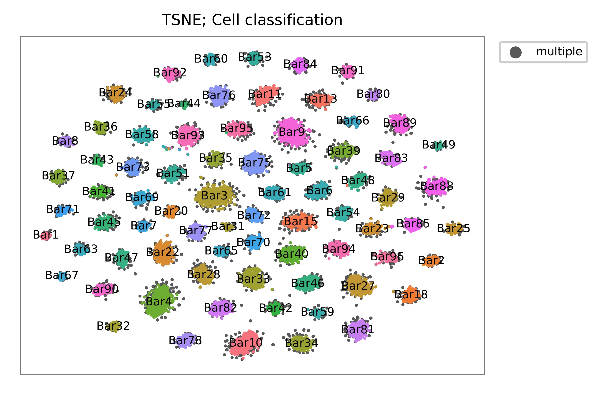

15k HEK293 and 40k HMECs Multiplexed by Lipid- and Cholesterol-tagged Indices#
Dataset: MULTI-seq: sample multiplexing for single-cell RNA sequencing using lipid-tagged indices
McGinnis, C.S., Patterson, D.M., Winkler, J., Conrad, D.N., Hein, M.Y., Srivastava, V., Hu, J.L., Murrow, L.M., Weissman, J.S., Werb, Z., et al. (2019). MULTI-seq: sample multiplexing for single-cell RNA sequencing using lipid-tagged indices. Nat. Methods 16, 619–626.
Preparation#
Download pre-processed feature count matrix files from Gene Expression Omnibus.
$ wget https://ftp.ncbi.nlm.nih.gov/geo/series/GSE129nnn/GSE129578/suppl/GSE129578_processed_data_files.csv.tar.gz
$ tar zxvf GSE129578_processed_data_files.csv.tar.gz
$ ls -1
GSE129578_processed_data_files.csv.tar.gz
HMEC_orig_MULTI_matrix.csv
HMEC_techrep_MULTI_matrix.csv
PDX_MULTI_matrix.csv
POC_MULTI_matrix.csv
POC_nuc_MULTI_matrix.csv
15k human embryonic kidney 293 cells (HEK293)#
Pre-processing#
Inspect feature count matrix.
$ head POC_MULTI_matrix.csv
CellID,LaneID,Bar1,Bar2,Bar3,nUMI_Bar
AAACCTGAGAAGGTTT-1,LMO,1,35,0,36
AAACCTGAGATGTTAG-1,LMO,3,1,4,8
AAACCTGAGGAATGGA-1,LMO,257,0,0,257
AAACCTGAGGGATCTG-1,LMO,2,0,1,3
AAACCTGAGGTAAACT-1,LMO,98,0,0,98
AAACCTGAGTGTTAGA-1,LMO,87,0,0,87
AAACCTGCACACAGAG-1,LMO,114,1,2,117
AAACCTGCACAGCCCA-1,LMO,1,1,25,27
AAACCTGCATCCAACA-1,LMO,4,8,0,12
Pre-process feature count matrix.
In [1]: import numpy as np
In [2]: import pandas as pd
In [3]: m = pd.read_csv(filepath_or_buffer="POC_MULTI_matrix.csv",
index_col=0)
In [4]: m.iloc[1:5, 1:5]
Out[4]:
Bar1 Bar2 Bar3 nUMI_Bar
CellID
AAACCTGAGATGTTAG-1 3 1 4 8
AAACCTGAGGAATGGA-1 257 0 0 257
AAACCTGAGGGATCTG-1 2 0 1 3
AAACCTGAGGTAAACT-1 98 0 0 98
In [5]: m = m.T.drop(["LaneID", "nUMI_Bar"])
In [6]: m.to_csv(path_or_buf="matrix_featurecount_POC_MULTI.csv.gz",
compression="infer")
In [7]: m.sum(axis=0)
Out[7]:
CellID
AAACCTGAGAAGGTTT-1 36
AAACCTGAGATGTTAG-1 8
AAACCTGAGGAATGGA-1 257
AAACCTGAGGGATCTG-1 3
AAACCTGAGGTAAACT-1 98
...
TTTGTCACAAGCCTAT-3 0
TTTGTCAGTATAGTAG-3 0
TTTGTCAGTCTGATCA-3 0
TTTGTCAGTGCGCTTG-3 0
TTTGTCAGTGGTCCGT-3 0
Length: 15482, dtype: object
In [8]: np.median(m.sum(axis=0))
Out[8]: 20.0
Demultiplexing#
Cells are demultiplexed based on the abundance of features.
Demultiplexing method 4 is implemented based on the method described
in McGinnis, C., et al. (2019) with some modifications. A
cell identity matrix is generated in the output directory: 0 means
negative, 1 means positive. To generate visualization plots, set -v.
$ fba demultiplex -i matrix_featurecount_POC_MULTI.csv.gz -dm 4 -v
2021-12-20 14:54:45,248 - fba.__main__ - INFO - fba version: 0.0.x
2021-12-20 14:54:45,248 - fba.__main__ - INFO - Initiating logging ...
2021-12-20 14:54:45,248 - fba.__main__ - INFO - Python version: 3.9
2021-12-20 14:54:45,249 - fba.__main__ - INFO - Using demultiplex subcommand ...
2021-12-20 14:54:47,474 - fba.__main__ - INFO - Skipping arguments: "-q/--quantile", "-cm/--clustering_method", "-p/--prob"
2021-12-20 14:54:47,474 - fba.demultiplex - INFO - Output directory: demultiplexed
2021-12-20 14:54:47,474 - fba.demultiplex - INFO - Demultiplexing method: 4
2021-12-20 14:54:47,474 - fba.demultiplex - INFO - UMI normalization method: clr
2021-12-20 14:54:47,474 - fba.demultiplex - INFO - Visualization: On
2021-12-20 14:54:47,474 - fba.demultiplex - INFO - Visualization method: tsne
2021-12-20 14:54:47,474 - fba.demultiplex - INFO - Loading feature count matrix: matrix_featurecount_POC_MULTI.csv.gz ...
2021-12-20 14:54:48,677 - fba.demultiplex - INFO - Number of cells: 15,482
2021-12-20 14:54:48,677 - fba.demultiplex - INFO - Number of positive cells for a feature to be included: 200
2021-12-20 14:54:48,701 - fba.demultiplex - INFO - Number of features: 3 / 3 (after filtering / original in the matrix)
2021-12-20 14:54:48,701 - fba.demultiplex - INFO - Features: Bar1 Bar2 Bar3
2021-12-20 14:54:48,701 - fba.demultiplex - INFO - Total UMIs: 705,913 / 705,913
2021-12-20 14:54:48,713 - fba.demultiplex - INFO - Median number of UMIs per cell: 20.0 / 20.0
2021-12-20 14:54:48,713 - fba.demultiplex - INFO - Demultiplexing ...
2021-12-20 14:54:52,347 - fba.demultiplex - INFO - Generating heatmap ...
2021-12-20 14:54:54,168 - fba.demultiplex - INFO - Embedding ...
2021-12-20 14:55:12,277 - fba.__main__ - INFO - Done.
Heatmap of the relative abundance of features across all cells. Each column represents a single cell.
{kind=link}
Preview the demultiplexing result: the numbers of singlets, multiplets and negative cells.
In [1]: import pandas as pd
In [2]: m = pd.read_csv("demultiplexed/matrix_cell_identity.csv.gz", index_col=0)
In [3]: m.loc[:, m.sum(axis=0) == 1].sum(axis=1)
Out[3]:
Bar1 5909
Bar2 2016
Bar3 2083
dtype: int64
In [4]: sum(m.sum(axis=0) > 1)
Out[4]: 875
In [5]: sum(m.sum(axis=0) == 0)
Out[5]: 4599
40k primary human mammary epithelial cells (HMECs)#
Pre-processing#
Inspect feature count matrix.
$ head HMEC_orig_MULTI_matrix.csv
CellID,Bar1,Bar2,Bar3,Bar4,Bar5,Bar6,Bar7,Bar8,Bar9,Bar10,Bar11,Bar13,Bar15,Bar18,Bar20,Bar22,Bar23,Bar24,Bar25,Bar27,Bar28,Bar29,Bar31,Bar32,Bar33,Bar34,Bar35,Bar36,Bar37,Bar39,Bar40,Bar41,Bar42,Bar43,Bar44,Bar45,Bar46,Bar47,Bar48,Bar49,Bar51,Bar53,Bar54,Bar55,Bar58,Bar59,Bar60,Bar61,Bar63,Bar65,Bar66,Bar67,Bar69,Bar70,Bar71,Bar72,Bar73,Bar75,Bar76,Bar77,Bar78,Bar80,Bar81,Bar82,Bar83,Bar84,Bar85,Bar88,Bar89,Bar90,Bar91,Bar92,Bar93,Bar94,Bar95,Bar96,nUMI_Bar
AAACCTGAGAAACGAG-1,1,3,5,23,1,3,0,1,6,11,4,4655,7,2,1,3,6,4,0,1,4,4,0,2,3,3,2,0,2,6,4,3,1,0,2,3,5,5,4,0,3,2,1,0,0,2,1,1,1,0,2,0,7,7,2,2,3,2,15,35,0,0,3,9,4,1,3,3,1,1,0,0,2,0,2,0,4907
AAACCTGAGAATGTGT-1,1,1,2,12,3,4,0,0,6,6,7,2,5,2,0,4,198,2,4,9,11,6,0,1,2,4,2,0,1,0,4,0,0,0,0,2,6,0,2,1,8,2,0,0,0,0,0,1,0,89,14,0,2,41,1,2,2,3,6,3,4,0,3,3,1,1,0,3,0,0,1,0,1,8,1,2,539
AAACCTGAGACCCACC-1,0,0,4,6,2,2,8,0,2,5,1,0,6,1,0,4,492,2,0,1,2,3,1,1,2,0,3,0,1,0,2,2,0,1,1,1,3,2,1,0,1,1,0,0,0,2,0,2,0,0,1,0,0,0,1,2,0,0,1,1,0,0,2,3,0,1,0,0,76,0,1,1,0,1,3,3,671
AAACCTGAGGAACTGC-1,1,0,3,7,4,5,2,0,5,5,5,1,2,1,2,2550,3,4,0,4,5,62,1,4,6,2,4,1,2,0,6,37,8,0,2,1,34,2,1,0,3,1,0,0,0,1,1,0,2,4,3,0,3,0,5,0,3,12,4,3,3,0,4,5,4,0,2,1,2,11,1,0,3,0,2,0,2866
AAACCTGCAACTGGCC-1,0,1,3,3,4,5,0,1,1,11,4,1,6,1,3,25,8,1,1,8,6,9,2,6,2,3,2,1,1,4,3,1,4,1,6,1,29,4,9,0,7,21,1,0,0,2,1,1,3,1,1,2,2,5,5,26,6,3,13,15,4,2,3,4,18,1,0,2,1,3,0,1,4,20,1,0,372
AAACCTGCAGATTGCT-1,1,0,2,5,2,4,1,1,8,6,4,0,4,0,1,7,2,4,0,2,1,8,0,0,15,3,2,4,1,2,3,3,1,2,0,3,3,14,3,0,2,3,0,0,0,0,2,515,0,2,2,0,1,1,2,2,3,3,5,0,1,2,1,3,11,0,3,3,0,0,0,1,1,0,4,3,715
AAACCTGCAGGGCATA-1,0,4,11,10,3,4,4,2,4,23,4,2,11,3,1,17,6,4,8,7,6,16,2,3,23,4,6,5,3,8,4,4,5,2,10,7,29,3,3,0,4,2,3,0,0,1,0,7,0,3,2,2,1,6,6,0,0,9,12,7,2398,3,6,6,9,6,1,8,9,4,1,758,4,8,7,0,3570
AAACCTGCATACGCCG-1,0,2,2,11,1,2,1,0,6,7,1,0,3,1655,1,3,1,3,2,10,7,5,0,0,1,1,2,0,1,1,4,1,10,0,0,2,4,2,0,0,0,0,2,1,1,1,1,0,0,5,0,2,4,0,7,1,4,1,4,2,3,2,1,2,3,1,2,6,2,2,0,1,1,59,3,0,1910
AAACCTGCATCACAAC-1,0,1,10,4,1,7,0,0,3,5,0,1,2,1,207,10,5,2,3,3,8,3,1,1,3,1,4,2,4,0,1,1,5,0,1,0,5,3,12,0,3,0,1,1,2,1,1,3,2,2,0,0,0,1,0,1,2,3,6,2,4,0,1,6,2,1,3,1,4,0,1,1,6,4,2,0,390
Pre-process feature count matrix.
In [1]: import numpy as np
In [2]: import pandas as pd
In [3]: m = pd.read_csv(filepath_or_buffer="HMEC_orig_MULTI_matrix.csv",
index_col=0)
In [4]: m = m.T.drop(['nUMI_Bar'])
In [5]: m.to_csv(path_or_buf="matrix_featurecount_HMEC_MULTI.csv.gz", compression="infer")
In [6]: m.sum(axis=0)
Out[6]:
CellID
AAACCTGAGAAACGAG-1 4905
AAACCTGAGAATGTGT-1 512
AAACCTGAGACCCACC-1 665
AAACCTGAGGAACTGC-1 2865
AAACCTGCAACTGGCC-1 360
...
TTTGTCATCGAATGGG-3 3436
TTTGTCATCGGAGCAA-3 662
TTTGTCATCGGATGTT-3 152
TTTGTCATCTGATTCT-3 27223
TTTGTCATCTGCCAGG-3 256
Length: 40009, dtype: int64
In [7]: np.median(m.sum(axis=0))
Out[7]: 1241.0
In [8]: m.shape
Out[8]: (76, 40009)
Demultiplexing#
Cells are demultiplexed based on the abundance of features.
Demultiplexing method 4 is implemented based on the method described
in McGinnis, C., et al. (2019) with some modifications. A
cell identity matrix is generated in the output directory: 0 means
negative, 1 means positive. Set -v to create visualization plots.
$ fba demultiplex -i matrix_featurecount_HMEC_MULTI.csv.gz -dm 4 -v
2021-12-20 16:31:12,889 - fba.__main__ - INFO - fba version: 0.0.x
2021-12-20 16:31:12,889 - fba.__main__ - INFO - Initiating logging ...
2021-12-20 16:31:12,889 - fba.__main__ - INFO - Python version: 3.9
2021-12-20 16:31:12,889 - fba.__main__ - INFO - Using demultiplex subcommand ...
2021-12-20 16:31:15,503 - fba.__main__ - INFO - Skipping arguments: "-q/--quantile", "-cm/--clustering_method", "-p/--prob"
2021-12-20 16:31:15,503 - fba.demultiplex - INFO - Output directory: demultiplexed
2021-12-20 16:31:15,503 - fba.demultiplex - INFO - Demultiplexing method: 4
2021-12-20 16:31:15,503 - fba.demultiplex - INFO - UMI normalization method: clr
2021-12-20 16:31:15,503 - fba.demultiplex - INFO - Visualization: On
2021-12-20 16:31:15,503 - fba.demultiplex - INFO - Visualization method: tsne
2021-12-20 16:31:15,503 - fba.demultiplex - INFO - Loading feature count matrix: matrix_featurecount_HMEC_MULTI.csv.gz ...
2021-12-20 16:31:23,363 - fba.demultiplex - INFO - Number of cells: 40,009
2021-12-20 16:31:23,363 - fba.demultiplex - INFO - Number of positive cells for a feature to be included: 200
2021-12-20 16:31:23,430 - fba.demultiplex - INFO - Number of features: 76 / 76 (after filtering / original in the matrix)
2021-12-20 16:31:23,430 - fba.demultiplex - INFO - Features: Bar1 Bar2 Bar3 Bar4 Bar5 Bar6 Bar7 Bar8 Bar9 Bar10 Bar11 Bar13 Bar15 Bar18 Bar20 Bar22 Bar23 Bar24 Bar25 Bar27 Bar28 Bar29 Bar31 Bar32 Bar33 Bar34 Bar35 Bar36 Bar37 Bar39 Bar40 Bar41 Bar42 Bar43 Bar44 Bar45 Bar46 Bar47 Bar48 Bar49 Bar51 Bar53 Bar54 Bar55 Bar58 Bar59 Bar60 Bar61 Bar63 Bar65 Bar66 Bar67 Bar69 Bar70 Bar71 Bar72 Bar73 Bar75 Bar76 Bar77 Bar78 Bar80 Bar81 Bar82 Bar83 Bar84 Bar85 Bar88 Bar89 Bar90 Bar91 Bar92 Bar93 Bar94 Bar95 Bar96
2021-12-20 16:31:23,432 - fba.demultiplex - INFO - Total UMIs: 154,135,306 / 154,135,306
2021-12-20 16:31:23,462 - fba.demultiplex - INFO - Median number of UMIs per cell: 1,241.0 / 1,241.0
2021-12-20 16:31:23,462 - fba.demultiplex - INFO - Demultiplexing ...
2021-12-20 16:33:51,278 - fba.demultiplex - INFO - Generating heatmap ...
2021-12-20 16:35:49,956 - fba.demultiplex - INFO - Embedding ...
2021-12-20 16:36:58,791 - fba.__main__ - INFO - Done.
Heatmap of the relative abundance of features across all cells. Each column represents a single cell.
{kind=link}
t-SNE embedding of cells based on the abundance of features (no transcriptome information used). Colors indicate the index status for each cell, as called by FBA. This is a re-creation of Fig. 2a in McGinnis, C., et al. (2019).
{kind=link}
Preview the demultiplexing result: the numbers of singlets, multiplets and negative cells.
In [1]: import numpy as np
In [2]: import pandas as pd
In [3]: pd.options.display.max_rows = 999
In [4]: m = pd.read_csv("demultiplexed/matrix_cell_identity.csv.gz", index_col=0)
In [5]: m.loc[:, m.sum(axis=0) == 1].sum(axis=1)
Out[5]:
Bar1 121
Bar2 201
Bar3 745
Bar4 681
Bar5 257
Bar6 346
Bar7 181
Bar8 169
Bar9 687
Bar10 572
Bar11 395
Bar13 334
Bar15 472
Bar18 262
Bar20 195
Bar22 456
Bar23 279
Bar24 276
Bar25 226
Bar27 503
Bar28 378
Bar29 324
Bar31 123
Bar32 165
Bar33 488
Bar34 358
Bar35 260
Bar36 222
Bar37 247
Bar39 348
Bar40 453
Bar41 252
Bar42 215
Bar43 134
Bar44 103
Bar45 297
Bar46 391
Bar47 268
Bar48 276
Bar49 122
Bar51 316
Bar53 211
Bar54 254
Bar55 164
Bar58 356
Bar59 172
Bar60 182
Bar61 321
Bar63 202
Bar65 207
Bar66 200
Bar67 130
Bar69 286
Bar70 258
Bar71 184
Bar72 257
Bar73 299
Bar75 478
Bar76 396
Bar77 328
Bar78 286
Bar80 174
Bar81 387
Bar82 391
Bar83 294
Bar84 250
Bar85 263
Bar88 400
Bar89 360
Bar90 277
Bar91 213
Bar92 259
Bar93 452
Bar94 354
Bar95 366
Bar96 255
dtype: int64
In [6]: np.median(m.loc[:, m.sum(axis=0) == 1].sum(axis=1))
Out[6]: 276.0
In [7]: sum(m.sum(axis=0) > 1)
Out[7]: 3597
In [8]: sum(m.sum(axis=0) == 0)
Out[8]: 13448